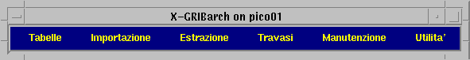
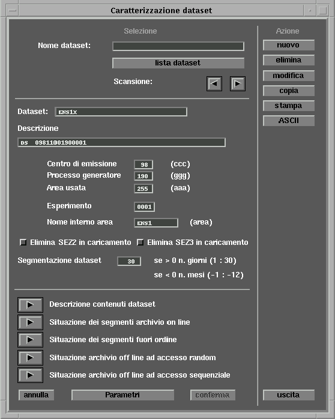
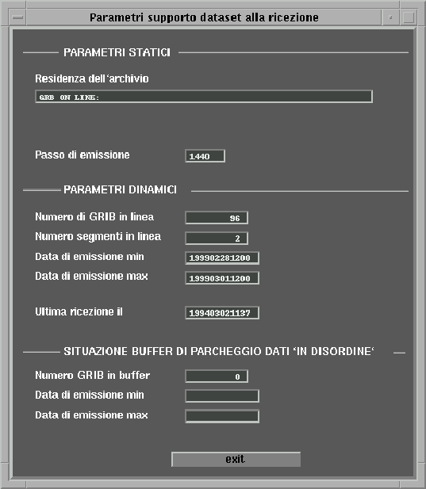
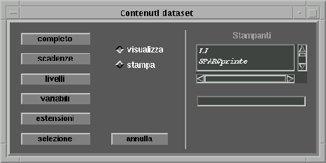
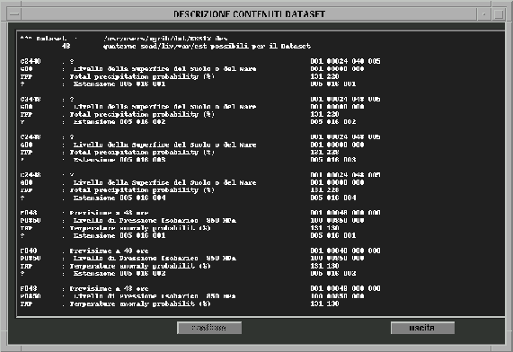

Sistema
Archiviazione GRIB 
Sistema
Archiviazione GRIB 
5. Procedure guidate a menù
Tutte le funzioni gestibili dal sistema di archiviazione sono utilizzabili tramite un menù guidato che si può attivare da terminale dando il comando menu. Viene in risposta presentato il menù di selezione delle funzioni:

Per l'interfaccia utente vengono utilizzate maschere MOTIF.
5.1 Gestione Tabelle
Tramite le funzioni di questa sezione si può effettuare la visualizzazione e la manutenzione diretta delle tabelle utilizzate dal sistema di gestione.
Le tabelle gestibili sono:
La tabella caratteristiche dei dataset (è presente anche la fuzione di sola visualizzazione).
La
tabella delle griglie
La tabella delle bit map
La tabella delle variabili
Le maschere di impostazione delle tabelle hanno le seguenti caratteristiche comuni (per il significato dei singoli campi si rimanda ad un paragrafo precedente):
- Contengono una prima sezione in cui deve essere impostata la chiave (può essere impostata direttamente nel campo, scelta dalla lista di quelle già esistenti o raggiunta attraverso la scansione avanti/indietro con le frecce), una seconda sezione (accessibile direttamente in visualizzazione o mediante le funzioni NUOVO e MODIFICA per la modifica effettiva dei dati) in cui compaiono i campi ausiliari ed eventuali visualizzazioni particolari, e una terza sezione di comandi (Azione).
- Le funzioni gestite sono:
- NUOVO: permette di definire una nuova chiave. Occorre prima impostare il nuovo codice chiave, poi premere la funzione e automaticamente il controllo passa alla seconda sezione per l'impostazione dei campi ausiliari.
- ELIMINA: permette di cancellare il record in quel momento visualizzato.
- MODIFICA: permette di modificare il record in quel momento visualizzato. Dopo aver premuto la funzione il controllo passa alla seconda sezione per la modifica dei campi ausiliari.
- COPIA: a partire da un record visualizzato consente di crearne uno nuovo con gli stessi valori nei campi ausiliari (il nome della nuova chiave si deve impostare nel campo relativo della mascherina che compare dopo la selezione della funzione). Dopo la conferma della copia il controllo passa automaticamente alla modifica dei campi ausiliari del nuovo record.
- STAMPA: permette di visualizzare o stampare il contenuto della tabella (tutta o parte di essa). Compare una seconda mascherina in cui occorre definire i limiti di stampa ed eventualmente scegliere da lista la stampante su cui indirizzare l'output.
- ASCII: con questa funzione è possibile scaricare il contenuto della tabella (tutta o parte di essa) in un file ASCII, per eventuale trasporto o modifica manuale dei dati, e successivamente di ricaricarlo in tabella. Compare una seconda mascherina in cui occorre impostare i limiti di estrazione e il nome del file ASCII, quindi selezionare la funzione desiderata (visualizzazione del file ASCII, scarico sul file, ripristino da file ASCII in tabella); dopo lo scarico viene chiesto se occorre eliminare dalla tabella i record scaricati, mentre dopo il caricamento viene indicato il numero di records aggiunti (chiave non presente precedentemente in tabella) e sostituiti (chiave già presente in tabella).
5.1.1 Gestione caratteristiche dataset
Compare la seguente maschera:

In fase di modifica, oltre ai campi ausiliari qui presenti è possibile accedere agli ulteriori parametri con il tasto PARAMETRI che visualizza:

Sono gestite le seguenti funzioni di visualizzazione:
- DESCRIZIONE CONTENUTI DATASET: visualizza il contenuto del dataset in base alle terne scadenza/livello/variabile presenti. Compare la seguente mascherina che permette di selezionare il tipo di visualizzazione:

- COMPLETO: tutto il contenuto del dataset come nell'esempio qui riportato.

- SCADENZE: tutte le scadenze presenti.
- LIVELLI: tutti i livelli presenti.
- VARIABILI: tutte le variabili presenti.
- ESTENSIONI: tutte le estensioni presenti.
- SELEZIONE: con maschere successive si è guidati a selezionare in sequenza le scadenze, i livelli, le variabili e le estensioni (se ne esiste almeno una diversa da ‘000 000 000’) per poi giungere alla visualizzazione del contenuto del dataset in base alla scelta delle quaterne effettuata.
- SITUAZIONE DEI SEGMENTI ARCHIVIO ON-LINE: visualizza le informazioni relative ai segmenti dell'archivio on-line; in particolare vengono visualizzati, per ogni segmento, la prima e ultima data, il numero di bytes del segmento, il numero di gribs e la flag di già salvato.
- SITUAZIONE DEI SEGMENTI FUORI ORDINE: visualizza le informazioni relative ad eventuali segmenti fuori ordine; in particolare vengono visualizzati, per ogni segmento, la prima e ultima data, il numero di bytes del segmento, il numero di gribs e la flag di già salvato.
- SITUAZIONE ARCHIVIO OFF-LINE AD ACCESSO RANDOM/SEQUENZIALE: visualizzano, per ogni sezione, le informazioni di prima e ultima data presenti, numero di segmenti, numero gribs, passo di emissione e directory di appartenenza. Se viene selezionato il bottone "visualizzazioni estese" sulla maschera principale, per ogni sezione viene anche riportato il dettaglio dei segmenti presenti. Es.:
La funzione di stampa presenta la seguente maschera di selezione:
da qui, oltre alla selezione dei limiti e del tipo di output, è possibile scegliere di visualizzare, mediante il bottone "situazione segmenti", le informazioni di ogni segmento relativo ai dataset presentati. Es.:
La funzione di carico/scarico ASCII legge o scrive un file ASCII in cui ogni dataset è descritto da sei records (ogni campo caratteri è compreso tra apici singoli e i campi sono distanziati uno dall'altro da uno spazio):
- Primo record: nome dataset.
- Secondo record: descrizione dataset, centro emissione, griglia usata, processo generatore, nome interno griglia.
- Terzo record: segmentazione dataset, flag elim. sez2 in caricamento, flag elim. sez3 in caricamento.
- Quarto record: residenza archivio, flag di indicizzazione attiva, passo di emissione, numero grib in linea.
- Quinto record: numero segmenti in linea, data emissione min., data emissione max., data ultima ricezione, numero grib in buffer (dati in disordine).
- Sesto record: data emissione min. (dati in disordine), data emissione max. (dati in disordine).
esempio di file ASCII:
PICO
data s.r.l. Pagina
-